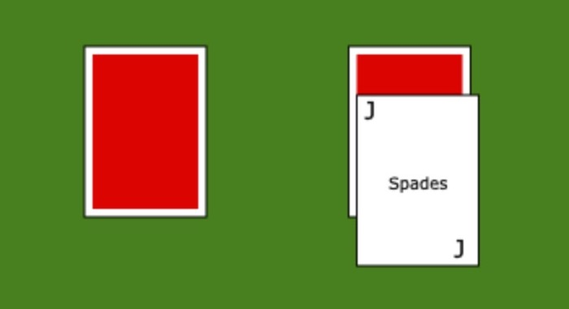

Projects

BlackJack Game A free-to-play BlackJack style game made using JavaScipt. During developement of this solo-project, I learned JavaScipt basics and worked with arrays, sorting algorithms, and random functions in order to sort and deal the cards. The game keeps track of your money and chips, and was tested for edge cases to eliminate bugs.

Portfolio Website This is a stactic website made usting HTML, CSS, and JavaScript. I made this to better understand HTML/CSS and how to integrate JavaScript. During this, I also learned how to use git version control, securing with SSL, as well as AWS hosting. The site was made to be mobile reponsive. Additionally I implemnted smooth scroll though JavaScript. Throughout this project, I was introduced to front-end web development and UI/UX elements. My favorite feature of this is in the about section, where there is a lookalike terminal.